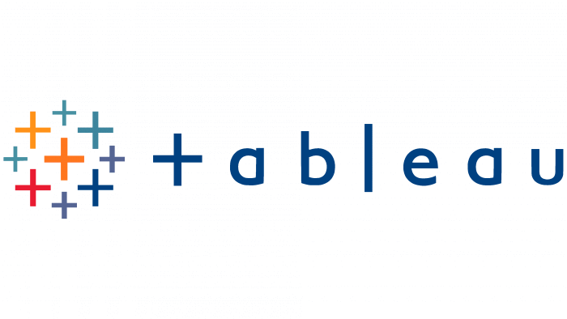
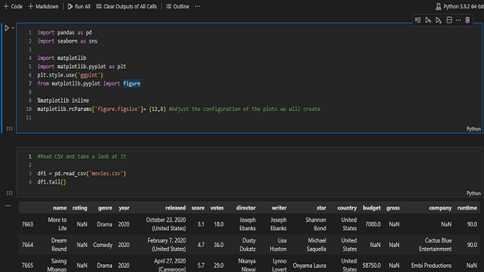

Data analysis to support the right decision
With efficiency and confidence.
Collect
Extract data from different sources, experienced with libraries like Selenium in python,
API from Youtube, or the task to extract it from a database with SQL. Collecting with a
mindset of aiming for data that answer the business interrogatives. Able to collect data
with libraries like Selenium in python, the API from Youtube or from a database with SQL
Process
In order to transform our data, we can support the process in libraries like
pandas, numpy, software like mySQL, SQL Server or R studio. With the main goal
of preparing clean and organize data that allow us to identify the key points
of interest.
Visualize
Finally, a really important skill is to communicate our findings to others
to land as a team in an efficient solution or approach, achieving the bridge
between data and information, with the help of tools like Tableau, libraries
in python like seaborn or matplotlib along with great storytelling.
Recent Work

Dashboards
Here you can see some of the Dashboards i made in Tableau.

Python
Here you can check some work made in python.

SQL
Here we do data cleaning in SQL.
Forecast
Here we made a forecast for the sales in Python and Tableau.
About Me
Im a data-driven person, industrial engineer, passionate about learning, I have 6 years of experience working in the services industry field, my main development was through quality department, I have always used data to follow key performance indicators, forecasting sales, visualization of costs, statistics etc.
I believed we can achieve better decisions and approach of situations with the help of data, for small and big changes, open to a long-term labor relationship, where I can add value with creativity and integral knowledge.